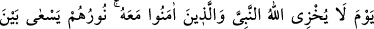
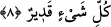

ileri sürmeniz yasak edilmiştir. Bazı tefsirlerde bu âyet-i kerîme şöyle tefsir edilmiştir:
Bugün özür dilemeyiniz. Çünkü bugün îtibâr edilecek bir mâzeretiniz yoktur ki, kabûl
olunsun da size fayda versin.
Bu “özür dilemeyin” şeklindeki yasaklama eğer onların özür beyân etmelerinden önce
ise bu takdirde âyet-i kerîme şu âyete uyum göstermektedir. “onlara izin de verilmez ki
mâzeretlerini beyân etsinler.” (el-Mürselât, 77/36) Eğer bu yasaklama özür beyân
etmelerinden sonradır denecek olursa o zaman bu söz te’vil olunur ve denilir ki, onlara
mâzeret beyânlarını tamamlama fırsatı verilmez. İleri sürecekleri mâzeretleri
dinlenmez.
et-Te‘vîlâtü’n-necmiyye’de bu âyet-i kerîme şöyle tefsir olunuyor: Hakkı bâtıl ile
örten ve dünyâda iken Hakk’ı müşâhede etmekten mahrûm olanlara söyle! Âhirette hakkı
müşâhade etmeyi istemesinler. Çünkü bugün onlara hakkı görmeme şeklinde bir mükâfat
verilecektir. Zîrâ onlar dünyâ hayatında hakkı görmemişlerdi. Bu tıpkı şu âyet-i kerîme
gibidir: “Bu dünyâda kör olan kimse âhirettede kördür. Üstelik iyice yolunu
şaşırmıştır.” (el-İsrâ, 17/72)
Âriflerden birisi der ki: Kıyâmet günü sâlih amel işleyemediğine hasretle içi yanacak
olanlar ancak avam tabakası; yâni sade insanlardır. Buna karşılık âriflere gelince onlar
kendilerinin amellerini görmezler ki onu elden kaçırdıklarına içleri yansın! Tam tersine
onların sâlih ameli kaçırmış olmaları asla vâkî değildir. Bu ancak âdil bir taksimdir, her
kulun bu taksime rızâ göstermesi gerekir. Bir insanın ben Allah’ın karşısında
kusurluyum, eksiğim demesi nefsin ezilmesi bâbındandır, yoksa bu gerçek değildir.
Çünkü hiç kimse kendisine taksim edilenden zerre kadar eksik bırakamaz ve buna zerre
kadar da ekliyemez. Şu halde pişmanlık sadece kulun kendisine âid olduğunu zannettiği
sonra da elden kaçırdığı amelleri hakkında olacaktır. Bunu da hiçbir ârif söylemez.
Mısrâ:
Biz kısmet dâiresinde teslim noktasıyız.
8. Ey îmân edenler! Samîmî bir tevbe ile Allah’a dönün. Umulur ki Rabbiniz sizin
kötülüklerinizi
örter.
Peygamberi
ve
Onunla
birlikte
îmân
edenleri
utandırmayacağı günde Allah sizi, içlerinden ırmaklar akan cennetlere sokar.